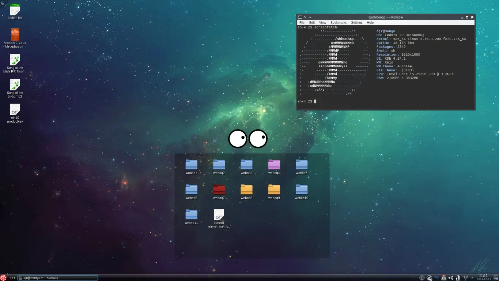

Post-mortem of KDE 4-series 2008-2015

KDE 4.0 was released on 11.1.2008, with KDE 3.5.10 being the last version of the old order.
KDE's new Plasma Deskotp was a very ambitious project. It was supposed to combine a cutting-edge semantic desktop system where everything is connected into a modern, uniform, network transparent and customizable desktop environment. There was only a small problem: it didn't work. Plasma and everything shipping with it on day one were unusable. It took the project four point releases to make the system somewhat usable. As years went by, KDE still struggled. KDE became synonymous with glitch and crash. Not a single enterprise distribution ended up using KDE during these years.
While being the largest global open-source project after the Linux kernel itself, KDE remained in the fringes. Users were flocking to GNOME, XFCE, LXDE, and Cinnamon. Very few distro spins such as Kubuntu and Chakra aside, no major distro adopted KDE as its primary desktop. openSUSE was widely regarded as the only exception due to its heavy focus on polishing KDE, but in the end even SUSE Linux Enterprise Desktop, which is derived from openSUSE, went with way more stable GNOME every time. Why did this happen? Could it have been avoided?
# Monolith Architecture
In order to reach uniformity and interconnectedness of the entire system, KDE adopted a massively monolithic development model. KDE became a SC, a Software Compilation, where the KDE Plasma Desktop was just a part of the whole. Everything from underlying libraries to applications like file manager Dolphin was to be updated all at once to ensure that interoperability remained. That sounds reasonable in theory, but in practice everything went to hell.
It wasn't until final years, in my opinion until the very last release of KDE, version 4.14, that it actually got stable enough to even consider it for daily use. That means, stable enough to do things without constant fear of something crashing, glitching or getting stuck out of nowhere. That is six years of development on a massive scale.
Revealing of the massive scale of everything was the dependencies which came with KDE applications. If a GNOME user decided to install a KDE application such as Kate (a great text-editor) in a system "untainted" by KDE, better prepare to pull 200 MB of dependencies with it. This led to a strict framework separation followed by many users. Even if a KDE application was way better than the GTK alternative, it was wise to take the GTK alternative in case you ran a GTK desktop. I remember showing my friend how to install things from Ubuntu Software Centre, and he clicked Gwenview (an image viewer) before I had a chance to explain. There we waited, as that image viewer with small catalog size downloaded for a long time.
As development dragged forward, part of the intended core functionality was lost, because it worked so badly that many users opted to switch it off entirely. I'm talking about the duo of Strigi the file indexer, and Akonadi the personal information management system. Strigi was so demanding on resources and initially was not limited in any way on the resource usage, that it could bring even a desktop system capable of running Crysis on knees out of nowhere. There was for example a bug in PDF content indexing, where Strigi aimlessly tried to index content it couldn't understand, such as frames and images embedded in the document. A fast hack piping PDF to text to be indexed was deviced, but unsurprisingly it didn't work too well either.
Slowly KDE became a system hacked together, only adding to the already massive code burden. What was supposed to be an elegant architecture became a shoddy patchwork out of necessity. This in turn made the code unmaintainable. It is telling, that entering a generic search term such as "desktop" into the KDE bugtracker would tell that Bugzilla can't display so many results. Finally the KDE developers made a decision around twilight years of 4.13 release to swap Strigi with a more lightweight Baloo file indexer. The semantic desktop that developers had envisioned never saw daylight in working condition.
# Neglected Usability
The other major issues past the critical dysfunctionality were in the usability and user interaction. Sometimes they went on a deep level, such as unwillingness of developers to implelent a proper pam-auth keyring activated on login (like on other desktops) and stubbornly sticking to a KWallet (a kind of password keep requiring user password every time a password from it was required), which in theory was more secure, but got so much in the way of daily use, that disabling it by leaving it without password - that is, storing all passwords and secrets unencrypted - became a common recommendation for those many who found it nuisance.
For those who never used KDE back then, imagine opening your mail application. That would require you to give your user password. Or connecting to a previously known WLAN, that would require giving user password as well. Or storing a new one, because that would again require opening the wallet. Keyring system that has been in use in every other system from OS X to GNOME to even LXDE was not there. Keyrings are opened transparently, assuming user has managed to log in the system. Rest of the time keyring is encrypted. Again, change happened very late to the lifecycle of KDE4, with experimental pam-auth being implemented in 4.13.
Usability problems didn't end there. The system got a reputation of being laggy. This was technically not the case. It was just that for some reason, Plasma designers decided that having a persistent laggy animation almost everywhere was a good thing. For example, opening the Plasma menu and hovering mouse cursor over menu items had the hover-over animation lagging behind mouse movements. This lag-effect also was in the taskbar, in krunner results and in kickoff menu. The user didn't get a visual cue instantly. Changing animation speeds didn't help either since it was so deep in design. It felt boggy and heavy, despite the entire desktop with full services enabled and entire klibs preloaded used just a wee bit over 200 MB RAM. Partial improvement didn't happen until the very last release of 4.14, when taskbar became responsive as a "minor" enchantment.
The design in itself of the KDE 4-series was consistently ugly as sin, both inside and outside. It was common wisdom that after installing KDE, one should reserve one evening to set up everything to be usable. I developed such a routine that I did it in less than a hour post-install.
For sake of writing my post-install routine down for the first time and enshrine it for future generations: swap Oxygen deco to Plastik, disable bunch of transparency effects, make animations near-instant, change colour scheme to my own Aava, set gradients to zero, set up bunch of basic shortcuts like quick tiling with meta+arrows, kick off Kickoff launcher and replace it with Homerun, swap Air plasma theme to Oxygen, set mouse cursor to Zion, change how toolbar works by setting it to sort manually, disable "helpful tips", change window placement rules to cascading from "smart", delete all inevitable duplicates from application menu, set window buttons to: window_menu,keep_above,min,max,close, set mousewheel over titlebar to shade window, hack ibus to integrate properly, disable system sounds, disable startups splash screen, tweak tray to be more relevant.
Post-setup would have been much easier if it had been possible to make a script for it all like I did for GNOME3, but for some odd reason that was not possible. Or maybe it was. But there was no such thing as gsettings is for GNOME3 as far as I am aware.
The vision of KDE SC proved too much to accomplish. It ruined the reputation of the once-dominant desktop environment and turned a system filled with brilliant innovations and many industry-firsts into a running gag within Linux community. This was a tragedy, taking into account the amount of willing developers working on it, and hopeful users trying again and again if the desktop is usable. Just because it promised so much good from day one.
# New Era
Thankfully, the new KDE 5-series or "Plasma 5 / Frameworks 5 by KDE community" as they insist on calling it now, has abandoned the super-monolithic "software compilation" thinking and embraced a more modular architecture and development model. Now the framework libraries, desktop and applications are separately developed entities. Previously largely singular kdelibs have been made smaller, more manageable pieces. There is no longer any drive to release everything at once. This makes dependency footprint of applications smaller, and pinpointing of bugs easier.
As I am now writing this in KDE 5 made of frameworks version 5.9.0 and Plasma 5.3, it is already obvious that the project has made a great decision. Plasma 5-series is just about year old now counting from 5.0 release, with 5.2 being the first release that got good-to-go for daily use thumbs-up from developers. All the past issues with gross instability, glitchiness, usability errors and design seem to have been fixed. In fact, this desktop is the best one I have ever used in my life, and certainly the most beautiful - by default. The way forward can only make this better still, as the few remaining glitches and incompatibilities are ironed out, and this time hopefully for good once they are squashed for the first time. In the end, experiences of the past seven years seem to have paid off and the same mistakes are now actively avoided. The only question is: was doing all those mistakes for so long really necessary?